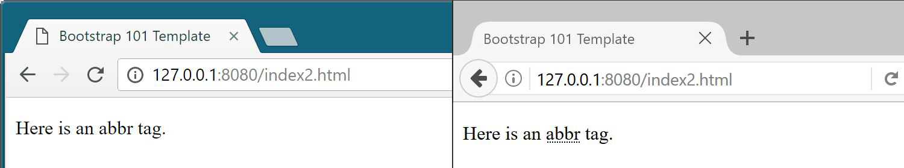

class: center, middle # Bootstrap --- ## Summary .breadcrumbs[<a href="#1">Bootstrap</a>] Introduction to [Bootstrap][bootstrap], a HTML/CSS framework, useful to quickly build HTML templates and views. This material is part of the [Advanced Front-end Development](https://github.com/MediaComem/comem-masrad-dfa) for the [Master of Advances Studies in Rapid Application Development](https://www.he-arc.ch/ingenierie/mas-rad-cas-dar). **You will need** - [Google Chrome][chrome] (recommended, any browser with developer tools will do) - [Visual Studio Code][vscode] (recommended, although any editor could do) **Required reading** - [Course setup][setup] <link rel="stylesheet" href="https://stackpath.bootstrapcdn.com/bootstrap/4.4.1/css/bootstrap.min.css" integrity="sha384-Vkoo8x4CGsO3+Hhxv8T/Q5PaXtkKtu6ug5TOeNV6gBiFeWPGFN9MuhOf23Q9Ifjh" crossorigin="anonymous"> <link rel="stylesheet" href="./css/cancel-bootstrap.css"> --- class: center, middle, image-header ## What is Bootstrap? .breadcrumbs[<a href="#1">Bootstrap</a>] <p class='center'><img src='images/bootstrap.png' width='20%' /></p> > "Bootstrap is the **most popular** HTML, CSS, and JS framework for developing **responsive**, mobile first projects on the web." --- ## Why Bootstrap? .breadcrumbs[<a href="#1">Bootstrap</a>] Bootstrap is a **framework** _(although technically more a library)_: it's a set of **pre-defined** "elements", here HTML components and CSS classes, that developers can use to gain: - **Speed of development**: - Everything is already there for you - **Consistency**: - All your pages will share the same style - **Responsivness**: - Bootstrap behave well on desktop, tablet and smartphone - **Customizability**: - Every components can be modified to suit your needs - **Support**: - Bootstrap is heavily used, tested and documented > Bootstrap is, basically, **one big CSS file**, and as such, **must be included** somewhere in your project for you to use it. --- ### CDN .breadcrumbs[<a href="#1">Bootstrap</a> > <a href="#4">Why Bootstrap?</a>] You have several ways of including Bootstra. The first one we'll see is using a **CDN** (**C**ontent **D**elivering **N**etwork). CDNs allow you **to reference files** useful for your project using **URLs** that points to them. This way, each time a page with a CDN URL is requested by a user, their browser will **retrieve the file through Internet**. To include Bootstrap with a CDN, add this `<link>` tag at the bottom of your `<head>` tag in your `index.html` file: ```html <head> ... <link rel="stylesheet" href="https://stackpath.bootstrapcdn.com/bootstrap/4.4.1/css/bootstrap.min.css" integrity="sha384-Vkoo8x4CGsO3+Hhxv8T/Q5PaXtkKtu6ug5TOeNV6gBiFeWPGFN9MuhOf23Q9Ifjh" crossorigin="anonymous" /> </head> ``` > This will include in your file the 4.4.1 version of Bootstrap --- ### Download locally .breadcrumbs[<a href="#1">Bootstrap</a> > <a href="#4">Why Bootstrap?</a>] You can also **download the files locally** and reference them in your `index.html` file. 1. Download a `.zip` archive with compiled Bootstrap files [here][dl-bootstrap] 2. Unzip the archive somewhere on your filesystem 3. Once unzipped, you should have the following structure: ```sh bootstrap-4.4.1-dist/ ├─ css/ │ └─ [some files] └─ js/ └─ [some files] ``` Create a `css` folder at the root of your poject directory, at the same level than `index.html`. Copy in this new directory the file `bootstrap.min.css` from the `bootstrap-4.4.1-dist/css` directory, then add this `<link>` tag at the bottom of your `<head>` tag in your `index.html` file: ```html <head> ... <link href="css/bootstrap.min.css" rel="stylesheet" /> </head> ``` --- ### How do I know it's working? .breadcrumbs[<a href="#1">Bootstrap</a> > <a href="#4">Why Bootstrap?</a>] To be sure that Bootstrap is correctly included in your project, just open your `index.html` in a browser. With a simple "Hello World" example, your page **without Bootstrap** could look like this: <p class='center'><img src='images/without-bootstrap-css.jpg' width='100%' /></p> The same page, but **with Bootstrap correctly included** should look like this: <p class='center'><img src='images/with-bootstrap.jpg' width='100%' /></p> > Notice how the font has changed? That's a **good** sign. --- ## What does it do? .breadcrumbs[<a href="#1">Bootstrap</a>] We already said that Bootstrap is a bunch of CSS styles already written for you. [The Bootstrap documentation][bootstrap-css] divides those styles in four sections: - **Layout** for classes related to page layout management - **Content** for classes that overwrite default HTML elements style or enhance them - **Components** for various predefined page components using a **specific** HTML structure and dedicated classes - **Utilities** for classes that can be added to many different HTML elements > This subject only cover a handful of what Bootstrap has to offer. --- class: center, middle ## Bootstrap documentation .breadcrumbs[<a href="#1">Bootstrap</a>] Everything that is presented in this subject can also be found in **the very well done Bootstrap documentation**, along with lot of **examples** and **information**. We highly recommend that you check it out. [Bootstrap Documentation][bootstrap-css] --- ### Screen-readers helpers .breadcrumbs[<a href="#1">Bootstrap</a> > <a href="#9">Bootstrap documentation</a>] When browswing the Bootstrap documentation, you'll inevitably found some examples with `.aria-*` attributes: ```html <button type="button" class="close" `aria-label`="Close"> <span `aria-hidden`="true">×</span> </button> ``` You could also find elements with the `.sr-only` class or the `role` attribute: ```html <span `class="sr-only" ` `role="error" `>Error:</span> ``` All these [ARIA][aria] attribute, class or `role` are used only for **accessibility**. They are invisible to human reader and only interpreted by assistive technologies or software that help disabled people browsing the Web. > They **don't alter** in any ways neither **the design of the page** nor **the behavior of its elements**. > > If you'd like, you can **remove them without fear for your design**. --- ## Element default styles .breadcrumbs[<a href="#1">Bootstrap</a>] Bootstrap comes with CSS styles that are applied to **HTML elements**, without **adding classes** to them. Some of the elements impacted are: - `<h1>` to `<h6>` - `<small>` (an element that display smaller text) - `<mark>` (an element that highlights its content) - `<abbr>` (an element to explain an abbreviation) - `<code>` (an element that define its content as code) --- ### Examples .breadcrumbs[<a href="#1">Bootstrap</a> > <a href="#11">Element default styles</a>] To see for yourself how Bootstrap stylizes those elements, let's **add some of them** in your project. Open the `index.html` file and **replace** the content between the `body` tags with this: ```html <h1>This is a h1 Title <small>with small text inside</small></h1> <h2>This is a h2 Title</h2> <p>This is a paragraph <small>with small text inside</small></p> <p><mark>Some highlight text.</mark></p> <p>Here is an <abbr title="abbreviation">abbr</abbr> tag.</p> <p>Do you want to write some <code>function()</code>?</p> ``` To **compare** the same elements without Bootstrap, create a new file called `compare.html`, and **copy-paste all the content** of `index.html` inside it. Now, in the `compare.html` file, **remove** the line with the `<link>` that **includes** Bootstrap, and save it. Finally, open both `index.html` and `compare.html` in your browser. > What differences do you see? --- ### Why put styles on element? .breadcrumbs[<a href="#1">Bootstrap</a> > <a href="#11">Element default styles</a>] As you can see, HTML elements already **have** default styles, even without CSS. But these styles are **browser dependant**, i.e. your page could be rendered differently on **Chrome**, **Firefox**, **Edge** and/or **Safari**. See, for example, the rendering of an `<abbr>` tag on **Chrome** VS **Firefox**... <p class='center'></p> ...or that of a `<code>` tag on **Chrome** VS **Edge** <p class='center'><img src='images/code-comparison.jpg' width='100%' /></p> --- ### Normalization (or Reboot) .breadcrumbs[<a href="#1">Bootstrap</a> > <a href="#11">Element default styles</a>] To avoid this rendering problem, developers use a technique called **CSS Normalization**. Normalizing the CSS means creating styles for **HTML element** to **cancel** default styles that are **not consistent among browsers**. Bootstrap uses the [Normalize.css][normalize] library, that do just that. By using a normalizer and adding its own style for basic HTML elements, Bootstrap ensures that your page will be **consistently rendered** on each browser. > More information in the [Bootstrap documentation][bootstrap-reboot] --- ## Layout .breadcrumbs[<a href="#1">Bootstrap</a>] Bootstrap offers some advanced page layout management classes, useful to compose a structured, responsive et readable design. > We will dive a little deeper in those layout classes in a subsequent subject. For now, let's see some basics and start anew with our `index.html` file... Delete everything that's between your `<body>` tag and add: ```html <div> <h1>Bootstrap Initiation</h1> <div>Here will go the content.</div> </div> ``` --- ### Container .breadcrumbs[<a href="#1">Bootstrap</a> > <a href="#15">Layout</a>] Containers represents the `<div>`s that **structure** your content. Right now, this content is **fully aligned to the left** of the screen, almost touching the edge. It's ugly and not very readable. You can change that by adding a `.container-fluid` class to a `<div>` or any "block" element. ```html <div `class="container-fluid" `> <h1>Bootstrap Initiation</h1> <div>Here will go the content.</div> </div> ``` > The content will have a padding of `15px` from both edges, and your container will be as wide as possible. --- #### `.container` .breadcrumbs[<a href="#1">Bootstrap</a> > <a href="#15">Layout</a> > <a href="#16">Container</a>] If you want your container to be more centered, use the `.container` instead. ```html <div `class="container" `> <h1>Bootstrap Initiation</h1> <div>Here will go the content.</div> </div> ``` > Your container is now more centered on the screen, and have a fixed width. The `.container` class is designed so that your `<div>` will always be, at maximum, the width of a **1024x768** screen resolution, but with a padding of `15px`. --- #### Illustration .breadcrumbs[<a href="#1">Bootstrap</a> > <a href="#15">Layout</a> > <a href="#16">Container</a>] <p class='center'><img src='images/without-container.jpg' width='100%' /></p> <p class='center'><img src='images/with-container-fluid.jpg' width='100%' /></p> <p class='center'></p> --- ## Tables .breadcrumbs[<a href="#1">Bootstrap</a>] .grid-50[ Manually styling tables in CSS can be quite painful and time consuming. Bootstrap provides you with the `.table` class, that must be added to a `<table>` tag. Replace this line... ```html <div>Here will go the content.</div> ``` ...by this line... ```html <h2>Tables</h2> ``` ... then add the following snippet: ] .grid-50[ ```html <table `class="table" `> <thead> <th>#</th> <th>First name</th> <th>Last name</th> <th>Starship</th> </thead> <tbody> <tr> <td>1</td> <td>Jean-Luc</td> <td>Picard</td> <td>Enterprise D</td> </tr> <tr> <td>2</td> <td>Benjamin</td> <td>Sisko</td> <td>Defiant</td> </tr> <tr> <td>3</td> <td>Kathryn</td> <td>Janeway</td> <td>Voyager</td> </tr> </tbody> </table> ``` ] --- ### More table classes .breadcrumbs[<a href="#1">Bootstrap</a> > <a href="#19">Tables</a>] > These classes **must be** used in addition of the `.table` class. To add **stripes**, add the `.table-striped` class to your `<table>`: ```html <table `class`="table `table-striped`"></table> ``` To add **border**, add the `.table-bordered` class to your `<table>`: ```html <table `class`="table `table-bordered`"></table> ``` To add a **hover effect** to table rows, add the `.table-hover` class: ```html <table `class`="table `table-hover`"></table> ``` > You can use more than one additional class to your `<table>`. For example, if you'd want to have a table that has **all the preceding styles** at the same time, you could use: ```html <table `class="table table-bordered table-striped table-hover" `></table> ``` --- ## Colors .breadcrumbs[<a href="#1">Bootstrap</a>] Bootstrap defines some default colors: | _Name_ | _Usage_ | | ----------- | -------------------------------------------------------------------------------- | | `primary` | <span class="text-primary">Represent the main color of your website/theme</span> | | `secondary` | <span class="text-secondary">Use it as accent color</span> | | `success` | <span class="text-success">Use it for success messages or actions</span> | | `danger` | <span class="text-danger">Use it when something goes wrong</span> | | `warning` | <span class="text-warning">Use it to warn the user of something</span> | | `info` | <span class="text-info">Use it for harmless information messages</span> | | `light` | <span class="text-light bg-dark">Use it for better constrast if needed</span> | | `dark` | <span class="text-dark">A black-ish color</span> | --- ### Color utilities .breadcrumbs[<a href="#1">Bootstrap</a> > <a href="#21">Colors</a>] Those colors can be directly applied on some specific components, but can also be used for the text or background color of almost any HTML element. Add them a `text-` prefix to style the text, or `bg-` prefix for the background. > Using them along other pre-defined Bootstrap classes could have no effect. Add this before the `<h2>Tables</h2>` element: ```html <h2>Color classes</h2> <p class="`text-primary`">This text uses the primary color scheme.</p> <p class="`text-success`">This text uses the success color scheme.</p> <p class="`bg-warning`">This paragraph has a warning colored background.</p> <p class="`bg-info`">This paragraph has an info colored background.</p> <p class="`bg-danger` `text-light`">Colored background and colored text</p> ``` <div class="color-examples shadow"> <p class="text-primary">This text uses the primary color scheme.</p> <p class="text-success">This text uses the success color scheme.</p> <p class="bg-warning">This paragraph has a warning colored background.</p> <p class="bg-info">This paragraph has an info colored background.</p> <p class="bg-danger text-light">Colored background and colored text</p> </div> --- ## Components .breadcrumbs[<a href="#1">Bootstrap</a>] Components are what a web page is composed of. They could be very simple and straightforward elements, like buttons, or an ensemble of elements forming a more advanced and featured component, like cards or lists. Bootstrap provides a certain amount of those components and the documentation explains what classes to add on which HTML elements and how those elements should be organized for the component to render correctly. > Note that some components require the use of JavaScript to work as expected. > > We will not present those JavaScript-dependant components in this course. --- ### Buttons .breadcrumbs[<a href="#1">Bootstrap</a> > <a href="#23">Components</a>] Bootstrap adds many new classes regarding buttons, that allows you to create a wide variety of possible usage. Let's add some buttons to the `index.html` page. Add the following snippet right before the `<h2>Color classes</h2>` element: ```html <h2>Buttons</h2> <div> <a href="#">Link</a> <button>Button</button> <input type="submit" value="Input Submit" /> <input type="button" value="Input Button" /> </div> ``` > Right now, this should give you this: <div class="live-example shadow"> <a href="#">Link</a> <button>Button</button> <input type="submit" value="Input Submit" /> <input type="button" value="Input Button" /> </div> > It's doesn't look like much. Let's remedy that. --- #### The `.btn` class .breadcrumbs[<a href="#1">Bootstrap</a> > <a href="#23">Components</a> > <a href="#24">Buttons</a>] To properly use any of the button styles, you **must** add the special class `.btn` to the element you want to sylize. > You can add a button style to any `<a>`, `<button>` or `<input>` elements. ```html <a href="#" `class="btn" `>Link</a> <button `class="btn" `>Button</button> <input type="submit" value="Input Submit" `class="btn" ` /> <input type="button" value="Input Button" `class="btn" ` /> ``` The result should be: <div class="live-example shadow"> <a href="#" class="btn">Link</a> <button class="btn">Button</button> <input type="submit" value="Input Submit" class="btn" /> <input type="button" value="Input Button" class="btn" /> </div> The `.btn` class is used to add some basic styling that is **common** among all button styles. --- #### Additionnal classes .breadcrumbs[<a href="#1">Bootstrap</a> > <a href="#23">Components</a> > <a href="#24">Buttons</a>] Bootstrap defines **a button style for each predefined colors**, with its own class to add to an element **that already have** the `.btn` class: > Those classes simply prefix the color name with `btn-`. | Style | CSS class | Result | | :-------- | :--------------- | :--------------------------------------------------- | | Primary | `.btn-primary` | <button class="btn btn-primary">Click me!</button> | | Secondary | `.btn-secondary` | <button class="btn btn-secondary">Click me!</button> | | Success | `.btn-success` | <button class="btn btn-success">Click me!</button> | | Info | `.btn-info` | <button class="btn btn-info">Click me!</button> | | Warning | `.btn-warning` | <button class="btn btn-warning">Click me!</button> | | Danger | `.btn-danger` | <button class="btn btn-danger">Click me!</button> | | Link | `.btn-link` | <button class="btn btn-link">Click me!</button> | --- #### Inverted buttons .breadcrumbs[<a href="#1">Bootstrap</a> > <a href="#23">Components</a> > <a href="#24">Buttons</a>] Using `btn-outline-` instead of `btn-` as a prefix before the color name allows you to style your button with and inverted rendering: | CSS class | Result | | :--------------- | :--------------------------------------------------- | | `.btn-outline-primary` | <button class="btn btn-outline-primary">Click me!</button> | | `.btn-outline-secondary` | <button class="btn btn-outline-secondary">Click me!</button> | | `.btn-outline-success` | <button class="btn btn-outline-success">Click me!</button> | | `.btn-outline-info` | <button class="btn btn-outline-info">Click me!</button> | | `.btn-outline-warning` | <button class="btn btn-outline-warning">Click me!</button> | | `.btn-outline-danger` | <button class="btn btn-outline-danger">Click me!</button> | --- #### Try it! .breadcrumbs[<a href="#1">Bootstrap</a> > <a href="#23">Components</a> > <a href="#24">Buttons</a>] Add a: - `.btn-default` class to the `<a>` element - `.btn-info` class to the `<button>` element - `.btn-success` class to the `<input type="submit">` element - `.btn-outline-danger` class to the `<input type="button">` element <hr> The result should look like this: <div class="live-example shadow"> <a href="#" class="btn btn-default">Link</a> <button class="btn btn-info">Button</button> <input type="submit" value="Input Submit" class="btn btn-success" /> <input type="button" value="Input Button" class="btn btn-outline-danger" /> </div> --- #### Size control .breadcrumbs[<a href="#1">Bootstrap</a> > <a href="#23">Components</a> > <a href="#24">Buttons</a>] You can also change the overall size of your button, using three additionnal classes. Add the `.btn-lg` class to the `<button>` element to see it **larger**: ```html <button class="btn btn-info `btn-lg`">Button</button> ``` Add the `.btn-sm` class to the `<input type="button">` element to see it **a bit smaller**: ```html <input type="button" value="Input Button" class="btn btn-danger `btn-sm`" /> ``` <div class="live-example shadow"> <a href="#" class="btn btn-default">Link</a> <button class="btn btn-info btn-lg">Button</button> <input type="submit" value="Input Submit" class="btn btn-success" /> <input type="button" value="Input Button" class="btn btn-outline-danger btn-sm" /> </div> --- ### Forms .breadcrumbs[<a href="#1">Bootstrap</a> > <a href="#23">Components</a>] Creating forms in HTML is a big part of constructing web applications, and this is yet another subject that Bootstrap can help you with. Add these lines right before the `<h2>Buttons</h2>` element: ```html <h2>Forms</h2> <form> <input type="submit" class="btn btn-success" /> </form> ``` > We'll build more in this `<form>` element in the following slides. --- #### `.form-control` .breadcrumbs[<a href="#1">Bootstrap</a> > <a href="#23">Components</a> > <a href="#30">Forms</a>] Add the `.form-control` class to an `<input>` element to make it **full-width and stylized**. > This class can be added to any type of input. Let's add a text input that'll receive the **first name** of an hypothetic sign up form. Add these lines at the beginning of the `<form>` element: ```html <label for="firstname">First name</label> <input type="text" id="firstname" `class="form-control" ` /> ``` > The input is correctly displayed, but there's a spacing problem with the following button. --- #### `.form-group` .breadcrumbs[<a href="#1">Bootstrap</a> > <a href="#23">Components</a> > <a href="#30">Forms</a>] To resolve any spacing problem that could be present in your form, be sure to wrap your form element in a `<div>` with the `.form-group` class. > Both the **firstname** input **and** label needs to be wrapped with the div. Let's complete our form by adding a last name input that's to receive the **last name** of our new user. Add these lines before the `<input type="submit">`: ```html *<div class="form-group"> <label for="lastname">Last name</label> <input type="text" id="lastname" class="form-control" /> *</div> ``` > Notice how the `<label>` **and** the `<input>` are grouped together inside the `div.form-group` element. --- #### `.form-inline` .breadcrumbs[<a href="#1">Bootstrap</a> > <a href="#23">Components</a> > <a href="#30">Forms</a>] By default, all elements with the `.form-control` class will be as wide as possible, and will be presented in a stack, i.e. one element in top of another. If you'd rather have your form displayed inline, just add the `.form-inline` class to your top `<form>` element. ```html <form `class="form-inline" `> <div class="form-group"> <label for="firstname">First name</label> <input type="text" id="firstname" class="form-control" /> </div> <div class="form-group"> <label for="lastname">Last name</label> <input type="text" id="lastname" class="form-control" /> </div> <input type="submit" class="btn btn-success" /> </form> ``` > The `<label>` are optional. You could delete them and use the `placeholder` attribute on `<input>` instead. ```html <div class="form-group"> <input type="lastname" id="..." class="..." `placeholder="Last name" ` /> </div> ``` ??? Be aware that not all forms can be put inline. If your form is too big, it won't render correctly. --- #### Checkboxes .breadcrumbs[<a href="#1">Bootstrap</a> > <a href="#23">Components</a> > <a href="#30">Forms</a>] Bootstrap provides an HTML component for checkboxes to ensure a proper rendering and behavior. To add a checkbox to your `<form>`, you should use this **expected HTML markup**: <!-- prettier-ignore-start --> ```html *<div class="form-check"> <input class="`form-check-input`" type="checkbox" value="" id="defaultCheck1"/> <label class="`form-check-label`" for="defaultCheck1"> Remember me </label> *</div> ``` <!-- prettier-ignore-stop --> <div class="live-example shadow" style="line-height: 1.5"> <div class="form-check"> <input class="form-check-input" type="checkbox" value="" id="defaultCheck1" /> <label class="form-check-label" for="defaultCheck1"> Remember me </label> </div> </div> --- #### Radio buttons .breadcrumbs[<a href="#1">Bootstrap</a> > <a href="#23">Components</a> > <a href="#30">Forms</a>] The same goes for the radio buttons, and the expected HTML markup is pretty similar: > As usual the `name` attribute should be the same for related radio buttons <!-- prettier-ignore-start --> ```html *<div class="form-check"> <input class="`form-check-input`" type="radio" name="`directions`" id="leftDirection" value="left" checked/> <label class="`form-check-label`" for="leftDirection"> Left </label> *</div> *<div class="form-check"> <input class="`form-check-input`" type="radio" name="`directions`" id="rightDirection" value="right"/> <label class="`form-check-label`" for="rightDirection"> Right </label> *</div> ``` <!-- prettier-ignore-stop --> <div class="live-example shadow" style="line-height: 1.5"> <div class="form-check"> <input class="form-check-input" type="radio" name="directions" id="leftDirection" value="left" checked> <label class="form-check-label" for="leftDirection"> Left </label> </div> <div class="form-check"> <input class="form-check-input" type="radio" name="directions" id="rightDirection" value="right"> <label class="form-check-label" for="rightDirection"> Right </label> </div> </div> --- ### Navbar .breadcrumbs[<a href="#1">Bootstrap</a> > <a href="#23">Components</a>] To create a navigation bar in your application, you can use the **navbar** component. Add these lines right after your opening `<body>` tag and before the `<div class="container">`: ```html <nav class="navbar navbar-expand bg-light"> Bootstrap Initiation </nav> ``` This should add the text at the top of your page with a light-grey background. It currently doesn't look that much better than a simple `<div>` with some text in it... But thanks to the `.navbar` class, it opens up a lot of customization and fine-tuning. --- #### Navbar width .breadcrumbs[<a href="#1">Bootstrap</a> > <a href="#23">Components</a> > <a href="#36">Navbar</a>] You might have noticed an alignment difference between your navbar and the main content. This is because the main content is inside a `div.container` that limits the maximum width, while the navbar doesn't. Depending on your design, you might want the navbar to only extends as wide as the main content. If this is the case, simply add a `.container` class to the `<nav>` element: ```html <nav class="navbar navbar-expand bg-light `container`"> Bootstrap Initiation </nav> ``` If you'd like the navbar to be as wide as possible but restrict **the width of its content**, then add a `div.container` **as the first child** of the navbar: <!-- prettier-ignore-start --> ```html <nav class="navbar navbar-expand bg-light"> * <div class="container"> Bootstrap Initiation * </div> </nav> ``` <!-- prettier-ignore-stop --> > This is the markup that will be used for the rest of this subject --- #### Navbar Brand .breadcrumbs[<a href="#1">Bootstrap</a> > <a href="#23">Components</a> > <a href="#36">Navbar</a>] Usually, the navbar is where the logo or the brand of the web site or web application is located. In our example, _"Bootstrap Initiation"_ could be seen as our brand. To tell the navbar what element is the brand, wrap the brand content in an element (like `<div>`, `<span>` or `<a>`) and add it the `.navbar-brand` class: ```html <nav class="navbar navbar-expand bg-light"> <div class="container"> <a href="/" class="navbar-brand">Bootstrap Initiation</span> </div> </nav> ``` > Making the brand element a link to the homepage is a good practice, hence the use of an `<a>` element here. This will render the brand content a little differently than the rest of the navbar. --- #### Navbar theming .breadcrumbs[<a href="#1">Bootstrap</a> > <a href="#23">Components</a> > <a href="#36">Navbar</a>] You can easily theme your navbar using the [color utility classes](#21) we saw earlier. Let's change the background color of our navbar: ```html <nav class="navbar navbar-expand `bg-primary`"> ``` It worked, but we have a little issue of readability here, as the text of the brand element does not contrast very well with the background. You could add some classes to this element, but you'd have to do this for every other element added to the navbar. Instead, use one of the following classes on the `<nav>` element to let Bootstrap handle the contrast: | Class | Use when | | --------------- | ------------------------------------------------------- | | `.navbar-light` | The background is light and the content will be darker | | `.navbar-dark` | The background is dark and the content will be lighter | In our case, the `primary` color is a dark one. Hence, we should add the `.navbar-dark` class to our navbar: ```html <nav class="navbar navbar-expand `navbar-dark` bg-primary"> ``` --- #### Navbar links .breadcrumbs[<a href="#1">Bootstrap</a> > <a href="#23">Components</a> > <a href="#36">Navbar</a>] As its name implies, the navbar is usually ideal for navigation, and you'll probably want to add links to it. In our case, the navigation could be going to the `compare.html` page (_assuming you still have it_). Let's add this right after our `<a class="navbar-brand">` element: ```html *<div class="collapse navbar-collapse"> <ul class="`navbar-nav`"> <li class="`nav-item`"> <a href="compare.html" class="`nav-link`">Compare</a> </li> </ul> *</div> ``` > The `div.collapse.navbar-collapse` is necessary for the responsive behavior of the navbar, which we sadly won't see in details on this course. Notice the `.navbar-nav > .navbar-item > .nav-link` hierarchy. > If you don't like the idea of using a list for navbar links, [you can do without](https://getbootstrap.com/docs/4.4/components/navbar/#nav). --- #### Navbar buttons .breadcrumbs[<a href="#1">Bootstrap</a> > <a href="#23">Components</a> > <a href="#36">Navbar</a>] Now, let's say we'd like to add a _button_ in our navbar. Simply add any element with the button classes to the navbar: ```html <nav class="navbar navbar-expand navbar-dark bg-primary"> <div class="container"> <span class="navbar-brand">Bootstrap Initiation</span> <div class="collapse navbar-collapse"> <!-- navbar list --> </div> * <a class="btn btn-outline-light" href="#">Go to top</a> </div> </nav> ``` > Notice how the button is aligned to the right of the navbar. This is because it's placed outside the `div.collapse.navbar-collapse` element. > Place it inside the `div` to align it to the left. --- #### Fixed navbar .breadcrumbs[<a href="#1">Bootstrap</a> > <a href="#23">Components</a> > <a href="#36">Navbar</a>] If you scroll in your `index.html` page, you'll see that the navbar **scrolls with it**, thus disappearing from the screen at one point. You may want to have a navbar that's **constantly fixed** to the top of the screen. To do this, add the `.fixed-top` class to your `<navbar>` element. > Using the `.fixed-bottom` class will stick the navbar to the bottom of the page. ```html <nav class="navbar navbar-expand navbar-dark bg-primary `fixed-top`"> <!-- navbar content --> </nav> ``` But, damn!, now our navbar **overlaps** our content... > Since the navbar is now a fixed element, it **doesn't take space** anymore in the page flow. So all other content are **moved back up**. To fix this, we need to **add some padding** to the element that encloses our content. --- #### Fixing the fixed navbar .breadcrumbs[<a href="#1">Bootstrap</a> > <a href="#23">Components</a> > <a href="#36">Navbar</a>] Let's change our content element from a `<div>` to a `<main>` (for better semantics): ```html <body <nav class="navbar navbar-default navbar-fixed-top"> <!-- navbar content --> </nav> *<main class="container"> <!-- main content --> *</main> </body> ``` To add some padding, let's define a custom stylesheet. 1. In your project directory, create a `css` directory if it doesn't exist yet 2. In this `css` directory, create a new `style.css`, and open it 3. Add this line, and save the file: ```css /* The actual padding value will depend on your design */ main { padding: 56px; } ``` 1. Include the new CSS file in your `index.html`, between the `<head>` tags: ```html <link rel="stylesheet" type="text/css" href="css/style.css" /> ``` --- ### Lists .breadcrumbs[<a href="#1">Bootstrap</a> > <a href="#23">Components</a>] As we said before, simple lists using the classics `<ul>` and `<li>` elements without any classes are already stylized by Bootstrap. However, the framework also supports more advanced list options. To create a "stack-style" list, add : - a `.list-group` class to the `<ul>` element - a `.list-group-item` to each `<li>` elements. Add this code right before the `<h2>Forms</h2>` element: ```html <h2>Lists</h2> <ul class="`list-group`"> <li class="`list-group-item`">The Original Series</li> <li class="`list-group-item`">The Next Generation</li> <li class="`list-group-item`">Deep Space Nine</li> <li class="`list-group-item`">Voyager</li> <li class="`list-group-item`">Enterprise</li> <li class="`list-group-item`">Discovery</li> <li class="`list-group-item`">Picard</li> </ul> ``` --- #### Link elements .breadcrumbs[<a href="#1">Bootstrap</a> > <a href="#23">Components</a> > <a href="#44">Lists</a>] If you'd like your list elements to be clickable, you need to tweek a little your HTML structure: - the `<ul>` becomes a `<div>` - each `<li>` becomes and `<a>` with an additional `.list-group-item-action` class ```html <`div` class="list-group"> <`a` class="list-group-item list-group-item-action"><!-- content --></`a`> <`a` class="list-group-item list-group-item-action"><!-- content --></`a`> <`a` class="list-group-item list-group-item-action"><!-- content --></`a`> <`a` class="list-group-item list-group-item-action"><!-- content --></`a`> <`a` class="list-group-item list-group-item-action"><!-- content --></`a`> <`a` class="list-group-item list-group-item-action"><!-- content --></`a`> </`div`> ``` > The classes stay the same. You can now add a `href` attribute to any list item: ```html <a class="list-group-item list-group-item-action" `href="https://en.wikipedia.org/wiki/Star_Trek:_The_Original_Series"`> The Original Series </a> ``` --- #### I want more! .breadcrumbs[<a href="#1">Bootstrap</a> > <a href="#23">Components</a> > <a href="#44">Lists</a>] Just putting a single line of text inside a list item is sometimes not enough. Think of any instant messaging application (Whatsapp, Slack, Messenger, ...) where you could have, in each list item: - The name of your contact - Its profile picture - The last exchanged message - The date at which this last message was exchange - etc Let's create a second list right below the `<h2>Lists</h2>` element: ```html <div class="list-group"> <a class="list-group-item list-group-item-action"></a> <a class="list-group-item list-group-item-action"></a> <a class="list-group-item list-group-item-action"></a> </div> ``` --- #### Custom list item .breadcrumbs[<a href="#1">Bootstrap</a> > <a href="#23">Components</a> > <a href="#44">Lists</a>] You can add any kind of HTML within the `<a>` list-items to enrich them. > Custom list item can also be used with `<li>` elements. ```html <a class="list-group-item list-group-item-action"> * <h5>James T. Kirk</h5> * <p>Beam me up, Scotty!</p> </a> ``` You don't need to add extra classes to the custom content, unless you want to customize it depending on your needs, of course. --- #### Contextual list item colors .breadcrumbs[<a href="#1">Bootstrap</a> > <a href="#23">Components</a> > <a href="#44">Lists</a>] Any element within a `.list-group` list can be colored with one of the [predefined color](#21). > Note that using the `text-` or the `bg-` prefixes won't work here! Use a `list-group-item-` prefix before the color you want to apply: ```html <div class="list-group"> <a class="list-group-item list-group-item-action `list-group-item-success`"> <!-- content --> </a> <a class="list-group-item list-group-item-action `list-group-item-info`"> <!-- content --> </a> <a class="list-group-item list-group-item-action `list-group-item-danger`"> <!-- content --> </a> </div> ``` --- ### Badges .breadcrumbs[<a href="#1">Bootstrap</a> > <a href="#23">Components</a>] .grid-50[ If you have used some kind of web applications, you probably have seen little numbers in list elements or icons. ] .grid-50[ <p class='center'><img class='shadow' src='images/badges-examples.jpg' /></p> ] .grid-100[ Bootstrap provides a similar component, called a _badge_. Use a `<span>` element with the `.badge` class anywhere in your app to add a badge: ```html <a class="list-group-item list-group-item-action list-group-item-success"> <h5 class="d-flex justify-content-between"> <span>Jame T. Kirk</span> * <span class="badge">3</span> </h5> <p>Beam me up, Scotty!</p> </a> ``` As it is, a `.badge` class only adds spacing and style the content. You can add color to the badge by prefixing the color name with a `badge-` prefix: ```html <span class="badge `badge-light`">3</span> ``` ] --- ## Cards .breadcrumbs[<a href="#1">Bootstrap</a>] Cards are component designed for structuring content, and as such appear as visible blocks on the page (think Facebook's statuses). To create a card, the markup is quite simple: just create a `<div>` with the `.card` class. Put this right before the `<h2>Lists</h2>`: ```html <h2>Cards</h2> <div class="`card`"> Today, I ate an apple. It was tasty </div> ``` You see that the content is placed inside some kind of round-cornered block. But the spacing is quite not right... --- ### Card's body .breadcrumbs[<a href="#1">Bootstrap</a> > <a href="#50">Cards</a>] For correct spacing, the content of a panel **should be** placed inside a `<div>` with the `.card-body` class: ```html <div class="card"> <div class="`card-body`"> Today, I ate an apple. It was tasty </div> </div> ``` --- ### Header/Footer .breadcrumbs[<a href="#1">Bootstrap</a> > <a href="#50">Cards</a>] You can add a **header** and a **footer** to a card, to better structure its content. ```html <div class="card"> * <div class="card-header"> * John Doe commented on that: * </div> <div class="card-body"> Today, I ate an apple. It was tasty </div> * <div class="card-footer"> * <button class="btn btn-light btn-sm">Like</button> * </div> </div> ``` --- ### Card styling .breadcrumbs[<a href="#1">Bootstrap</a> > <a href="#50">Cards</a>] You can directly use any [color utility classes](#21) to style the different parts of your card: ```html <div class="card `text-primary bg-warning`"> <div class="card-header `text-danger`"> John Doe commented on that: </div> <div class="card-body `bg-dark`"> Today, I ate an apple. It was tasty </div> <div class="card-footer `bg-info`"> <button class="btn btn-light btn-sm">Like</button> </div> </div> ``` --- ### Card features .breadcrumbs[<a href="#1">Bootstrap</a> > <a href="#50">Cards</a>] Cards are very powerful components with many features and use case available through many classes. You can: - Add cover images - Display lists or tables - Tweek their size or their content alignment - Add navigation elements inside them - ... The [documentation is choke full of information][bs-card] about them ; you're strongly advised to go check it out, then try and experiment with all the possibilities. --- ## Icons .breadcrumbs[<a href="#1">Bootstrap</a>] Bootstrap doesn't come with a bundle icon set since its version 4. As a result, you need to include yourself an icon library, would you want to use one. The documentation recommand you some libraries, tested and used by the people behind Bootstrap. One of them is the **Font Awesome** library, which has [a huge amount of icons][fa-icons] to choose from. > The Free version restrict you to only one icon style You can include the **Font Awesome Library** with a many number of way, the easier one being through a CDN. Add the following line in the `<head>` of your `index.html`: ```html <link href="https://cdnjs.cloudflare.com/ajax/libs/font-awesome/5.13.0/css/all.min.css" rel="stylesheet"> ``` --- ### Usage .breadcrumbs[<a href="#1">Bootstrap</a> > <a href="#55">Icons</a>] Once the CSS is included, you can add icons to your page by using an `<i>` element, with the class `.fas` and the name of the icon. You can find the complete HTML to include by browsing the [icon library][fa-icons], clicking on the one you want to include (for example, ["align-left"][fa-align-left]), then clicking on **the HTML code in the header of the page** to copy it. <p class='center'></p> You'll just have to paste this HTML on your page to add the icon. Add this before the `<h2>Cards</h2>`: ```html <h2>Icons</h2> <div> <button class="btn btn-light">`<i class="fas fa-align-left">`</i></button> <button class="btn btn-light">`<i class="fas fa-align-center">`</i></button> <button class="btn btn-light">`<i class="fas fa-align-right">`</i></button> </div> ``` --- ## Resources .breadcrumbs[<a href="#1">Bootstrap</a>] > There are A LOT of other components and features we didn't cover in this subject. > Again... check the doc to see what Bootstrap offers and try them out. You will find the final HTML file for this course [here][final-file]. **Documentation** - [Bootstrap CSS Documentation][bootstrap-css] - [Normalize CSS][normalize] **Further reading** - [Bootstrap - Layout management][bsm] [fa-icons]: https://fontawesome.com/icons?d=gallery&m=free [fa-align-left]: https://fontawesome.com/icons/align-left?style=solid [bs-card]: https://getbootstrap.com/docs/4.4/components/card/ [vscode]: https://code.visualstudio.com/ [bootstrap-css]: http://getbootstrap.com/docs/ [bootstrap-reboot]: https://getbootstrap.com/docs/4.4/content/reboot/ [chrome]: https://www.google.com/chrome/ [rtfm]: https://en.wikipedia.org/wiki/RTFM [bootstrap]: http://getbootstrap.com/ [dl-bootstrap]: https://getbootstrap.com/docs/4.4/getting-started/download/#compiled-css-and-js [normalize]: https://necolas.github.io/normalize.css/ [bootstrap-glyphicons]: http://getbootstrap.com/components/#glyphicons-glyphs [final-file]: https://gist.githubusercontent.com/Tazaf/18732ef01164f7b6348443c4c4748f42/raw/index.html [bsm]: ../bootstrap-layout-management [setup]: ../setup [aria]: https://developer.mozilla.org/en-US/docs/Web/Accessibility/ARIA [bug-nav]: https://github.com/twbs/bootstrap/issues/17598#issuecomment-160248326